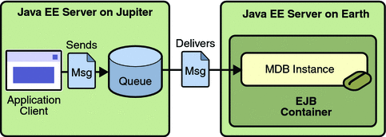

An Application Example That Consumes Messages from a Remote Server
This section and the following section explain how to write, compile, package, deploy, and run a pair of Java EE modules that run on two Java EE servers and that use the JMS API to interchange messages with each other. It is a common practice to deploy different components of an enterprise application on different systems within a company, and these examples illustrate on a small scale how to do this for an application that uses the JMS API.
However, the two examples work in slightly different ways. In this first example, the deployment information for a message-driven bean specifies the remote server from which it will consume messages. In the next example, the same message-driven bean is deployed on two different servers, so it is the client module that specifies the servers (one local, one remote) to which it is sending messages.
This first example divides the example in Chapter 17, A Message-Driven Bean Example into two modules: one containing the application client, and the other containing the message-driven bean.
You will find the source files for this section in tut-install/examples/jms/consumeremote/. Path names in this section are relative to this directory.
Overview of the consumeremote Example Modules
Except for the fact that it is packaged as two separate modules, this example is very similar to the one in Chapter 17, A Message-Driven Bean Example:
One module contains the application client, which runs on the remote system and sends three messages to a queue.
The other module contains the message-driven bean, which is deployed on the local server and consumes the messages from the queue on the remote server.
The basic steps of the modules are as follows.
The administrator starts two Java EE servers, one on each system.
On the local server, the administrator deploys the message-driven bean module, which specifies the remote server where the client is deployed.
On the remote server, the administrator places the client JAR file.
The client module sends three messages to a queue.
The message-driven bean consumes the messages.
Figure 31-5 illustrates the structure of this application. You can see that it is almost identical to Figure 17-1 except that there are two Java EE servers. The queue used is the one on the remote server; the queue must also exist on the local server for resource injection to succeed.
Figure 31-5 A Java EE Application That Consumes Messages from a Remote Server
Writing the Module Components for the consumeremote Example
Writing the components of the modules involves
Coding the application client
Coding the message-driven bean
The application client, jupiterclient/src/java/SimpleClient.java, is almost identical to the one in The simplemessage Application Client.
Similarly, the message-driven bean, earthmdb/src/java/MessageBean.java, is almost identical to the one in The Message-Driven Bean Class. The only significant difference is that the activation config properties include one property that specifies the name of the remote system. You need to edit the source file to specify the name of your system.
Creating Resources for the consumeremote Example
The application client can use any connection factory that exists on the remote server; it uses jms/ConnectionFactory. Both components use the queue named jms/Queue, which you created in To Create JMS Administered Objects for the Synchronous Receive Example. The message-driven bean does not need a previously created connection factory; the resource adapter creates one for it.
Using Two Application Servers for the consumeremote Example
As in Running JMS Clients on Multiple Systems, the two servers are named earth and jupiter.
The GlassFish Server must be running on both systems.
Before you can run the example, you must change the default name of the JMS host on jupiter, as described in To Change the Default Host Name Using the Administration Console. If you have already performed this task, you do not have to repeat it.
Which system you use to package and deploy the modules and which system you use to run the client depend on your network configuration (which file system you can access remotely). These instructions assume that you can access the file system of jupiter from earth but cannot access the file system of earth from jupiter. (You can use the same systems for jupiter and earth that you used in Running JMS Clients on Multiple Systems.)
You can package both modules on earth and deploy the message-driven bean there. The only action you perform on jupiter is running the client module.
To Build, Package, Deploy, and Run the consumeremoteModules Using NetBeans IDE
To edit the message-driven bean source file and then package, deploy, and run the modules using NetBeans IDE, follow these steps.
- In NetBeans IDE, choose Open Project from the File menu.
- In the Open Project dialog, navigate to tut-install/examples/jms/consumeremote/.
- Select the earthmdb folder.
- Select the Open as Main Project check box.
- Click Open Project.
- Edit the MessageBean.java file as follows:
- Expand the earthmdb, Source Packages, and mdb nodes, then double-click MessageBean.java.
- Find the following line within the @MessageBean annotation:
@ActivationConfigProperty(propertyName = "addressList", propertyValue = "remotesystem"), - Replace remotesystem with the name of your remote system.
- Right-click the earthmdb project and choose Build.
This command creates a JAR file that contains the bean class file.
- Choose Open Project from the File menu.
- Select the jupiterclient folder.
- Select the Open as Main Project check box.
- Click Open Project.
- Right-click the jupiterclient project and choose Build.
This target creates a JAR file that contains the client class file and a manifest file.
- Right-click the earthmdb project and choose Deploy.
- To copy the jupiterclient module to the remote system, follow these steps:
- Change to the directory jupiterclient/dist:
cd ../jupiterclient/dist
- Type a command like the following:
cp jupiterclient.jar F:/
That is, copy the client JAR file to a location on the remote filesystem. You can use the file system user interface on your system instead of the command line.
- Change to the directory jupiterclient/dist:
- To run the application client, follow these steps:
- Go to the directory on the remote system (jupiter) where you copied the client JAR file.
- To deploy the client module and retrieve the client stubs, use the following
command:
asadmin deploy --retrieve . jupiterclient.jar
This command deploys the client JAR file and retrieves the client stubs in a file named jupiterclientClient.jar
- To run the client, use the following command:
appclient -client jupiterclientClient.jar
On jupiter, the output of the appclient command looks like this (preceded by application client container output):
Sending message: This is message 1 from jupiter Sending message: This is message 2 from jupiter Sending message: This is message 3 from jupiter
On earth, the output in the server log looks something like this (preceded by logging information):
MESSAGE BEAN: Message received: This is message 1 from jupiter MESSAGE BEAN: Message received: This is message 2 from jupiter MESSAGE BEAN: Message received: This is message 3 from jupiter
- To undeploy the earthmdb module, follow these steps on earth:
- Click the Services tab.
- Expand the Servers node.
- Expand the GlassFish v3 Domain node.
- Expand or refresh the Applications node.
- Right-click earthmdb and choose Undeploy.
- To undeploy the jupiterclient module, use the following command on jupiter:
asadmin undeploy jupiterclient
You can also delete the jupiterclient.jar file from the remote filesystem, along with the jupiterclientClient.jar file and the directory jupiterclientClient that were created when you retrieved the client stubs.
- To remove the generated files on earth, follow these steps:
- On earth, right-click the earthmdb project and choose Clean.
- Right-click the jupiterclient project and choose Clean.
To Build, Package, Deploy, and Run the consumeremote Modules Using Ant
To edit the message-driven bean source file and then package, deploy, and run the modules using Ant, follow these steps.
- Open the file tut-install/examples/jms/consumeremote/earthmdb/src/java/mdb/MessageBean.java in an editor.
- Find the following line within the @MessageBean annotation:
@ActivationConfigProperty(propertyName = "addressList", propertyValue = "remotesystem"), - Replace remotesystem with the name of your remote system, then save and close the file.
- Go to the following directory:
tut-install/examples/jms/consumeremote/earthmdb/
- Type the following command:
ant
This command creates a JAR file that contains the bean class file.
- Type the following command:
ant deploy
- Go to the jupiterclient directory:
cd ../jupiterclient
- Type the following command:
ant
This target creates a JAR file that contains the client class file and a manifest file.
- To copy the jupiterclient module to the remote system, follow these steps:
- Change to the directory jupiterclient/dist:
cd ../jupiterclient/dist
- Type a command like the following:
cp jupiterclient.jar F:/
That is, copy the client JAR file to a location on the remote filesystem.
- Change to the directory jupiterclient/dist:
- To run the application client, follow these steps:
- Go to the directory on the remote system (jupiter) where you copied the client JAR file.
- To deploy the client module and retrieve the client stubs, use the following
command:
asadmin deploy --retrieve . jupiterclient.jar
This command deploys the client JAR file and retrieves the client stubs in a file named jupiterclientClient.jar
- To run the client, use the following command:
appclient -client jupiterclientClient.jar
On jupiter, the output of the appclient command looks like this (preceded by application client container output):
Sending message: This is message 1 from jupiter Sending message: This is message 2 from jupiter Sending message: This is message 3 from jupiter
On earth, the output in the server log looks something like this (preceded by logging information):
MESSAGE BEAN: Message received: This is message 1 from jupiter MESSAGE BEAN: Message received: This is message 2 from jupiter MESSAGE BEAN: Message received: This is message 3 from jupiter
- Undeploy the message-driven bean after you finish running the client. To undeploy the
earthmdb module, follow these steps:
- Change to the directory earthmdb.
- Type the following command:
ant undeploy
- To undeploy the jupiterclient module, use the following command on jupiter:
asadmin undeploy jupiterclient
You can also delete the jupiterclient.jar file from the remote filesystem, along with the jupiterclientClient.jar file and the directory jupiterclientClient that were created when you retrieved the client stubs.
- To remove the generated files on earth, use the following command in both
the earthmdb and jupiterclient directories:
ant clean